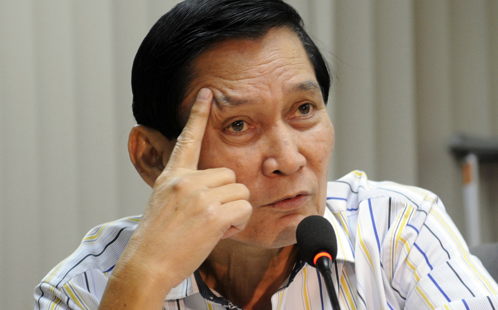

Arturo Radaza
Lapu-Lapu City (lone district)
Rep. Arturo Radaza served as Lapu-Lapu City Mayor for consecutive terms before becoming its first congressman when the city became a lone district. He served as Lapu-Lapu congressman for only one term, which ended on June 30, 2013.
Term: 2010 to 2013
Total PDAF: P175 million
PDAF share per year
| Year |
Amount |
| 2010 |
P15,000,000 |
| 2011 |
P35,000,000 |
| 2012 |
P66,400,000 |
| 2013 |
P58,600,000 |
2012
Total PDAF: P66,400,000
Implementing agency: DPWH
| Project |
Date |
Amount |
| Construction of 2 Classrooms at the Mactan Elementary School, Lapu-Lapu City |
Sept. 17, 2012 |
P2,000,000 |
| Construction of Multi-Purpose Buildings Caohagan, Lapu-Lapu City |
Sept. 17, 2012 |
P5,000,000 |
| Construction of Multi-Purpose Buildings Pusok, Lapu-Lapu City |
Sept. 17, 2012 |
P13,000,000 |
| Construction of Multi-Purpose Buildings, Talima, Lapu-Lapu City |
July 18, 2012 |
P3,500,000 |
| Concreting of Road, Sitio Tuburan, Sabang, Lapu-Lapu City |
July 18, 2012 |
P12,500,000 |
| Construction of Multi-Purpose Buildings, Caubian, Lapu-Lapu City |
July 18, 2012 |
P4,000,000 |
| Rehabilitation of footbridge, Lapu-Lapu City |
April 23, 2012 |
P200,000 |
| Construction of multi-purpose building, Lapu-Lapu City |
April 23, 2012 |
P300,000 |
| Construction of Multi-Purpose Buildings Caubian, Lapu-Lapu City |
April 4, 2012 |
P4,000,000 |
| Concreting of Road, Sitio Tuburan, Sabang, Lapu-Lapu City |
July 18, 2012 |
P12,500,000 |
| Construction of Multi-Purpose Buildings Talima, Lapu-Lapu City |
April 4, 2012 |
P3,500,000 |
Implementing agency: Lapu-Lapu City Government
| Project |
Date |
Amount |
| Financial assistance for construction of 2-storey buildings with 4 classrooms at Babag National High School, Lapu-Lapu City |
Sept. 7, 2012 |
P6,000,000 |
| Financial assistance for the completion of multi-purpose building in Brgy. Pangan-an, Lapu-Lapu City |
Sept. 7, 2012 |
P300,000 |
| Financial assistance to indigent patients of Lapu-Lapu City at Vicente Sotto Memorial Medical Center |
Sept. 7, 2012 |
P4,100,000 |
| Financial assistance to indigent patients in Lapu-lapu City Hospital |
Sept. 7, 2012 |
P1,000,000 |
| Financial assistance to Lapu-Lapu City for the purchase of 2 patrol boats (22mtr. RBB 50 HP Outboard Engine) |
April 18, 2012 |
P3,000,000 |
| Financial assistance to Lapu-Lapu City for indigent patients either confined or out-patients in hospitals under DOH and specialty hospitals / Vicente Sotto Memorial Medical Center |
April 18, 2012 |
P4,000,000 |
| Financial assistance to Lapu-Lapu City for indigent patients either confined or out-patients in hospitals under DOH and specialty hospitals/Lapu-Lapu City Hospital |
April 18, 2012 |
P1,000,000 |
| Financial assistance for rehabilitation of multi-purpose building in Brgy. Gun-ob, Lapu-Lapu City |
April 18, 2012 |
P1,700,000 |
| Financial assistance to Lapu-Lapu City for the purchase of 2 firefighting equipment (sea water pumps with hose and tank) for Brgy. Caubian, Lapu-Lapu City |
April 18, 2012 |
P5,300,000 |
2013
Total PDAF: P58,600,000
Implementing agency: Department of Public Works and Highways
| Project |
Date |
Amount |
| Concreting/Rehabilitation of Brgy. Road Basak, Lapu-Lapu City |
March 12, 2013 |
P12,000,0000 |
| Rehabilitation/Improvement of Multi-Purpose Building Bankal, Lapu-Lapu City |
March 12, 2013 |
P4,000,000 |
| Construction of Multi-Purpose Building Soong, Lapu-Lapu City |
March 12, 2013 |
P4,000,000 |
| Construction of Public Market Santa Rosa, Lapu-Lapu City |
Feb.7, 2013 |
P10,000,000 |
| Construction of Multi-Purpose Buildings Gun-ob, Lapu-Lapu City |
Feb.7, 2013 |
P8,000,000 |
| Construction of Multi-Purpose Buildings Maribago, Lapu-Lapu City |
Feb.7, 2013 |
P2,000,000 |
Implementing agency: Lapu-Lapu City Government
| Project |
Date |
Amount |
| Financial assistance for indigent patients either confined or out-patients |
Feb.7, 2013 |
P1,000,000 |
| Financial assistance for indigent patients either confined or out-patients in Vicente Sotto Memorial Medical Center (VSMMC) |
Feb. 27, 2013 |
P4,000,000 |
| Purchase of 2 units Police Patrol Car: Specifications: 2500 cc 4-cylinder, 16 valve, diesel engine, manual transmission at P1.075M/car |
Feb. 27, 2013 |
P2,150,000 |
| Financial assistance for Road Improvement at Barangay Marigondon, Lapu-Lapu City |
Feb. 27, 2013 |
P5,650,000 |
| Financial assistance for Flood Control: Dredging at Barangay Baring, Lapu-Lapu City |
Feb. 27, 2013 |
P700,000 |
| Additional funding allocation for the purchase of 2 fire fighting equipment (sea water pumps with hose and tank) for Barangay Caubian, Lapu-Lapu City (Engine-driven fire pump Split case fire pump complete with controller Capacity: 250 GMP VS, 203 psi TDH, 50HP, 230 VAC 3PH 60Hz) |
Feb. 15, 2013 |
P600,000 |
| Financial assistance to indigent patients either confined or out-patients of VSCMMC |
Feb. 15, 2013 |
P2,000,000 |
| Dredging of sea water pumps at Barangay Caubian, Lapu-Lapu City |
Feb. 15, 2013 |
P1,000,000 |
Purchase of IT Equipment for students of UP Cebu
| Items |
Amount |
| 1 unit US Audio Pa-80082 @ P20,000/unit |
P20,000 |
| 1 set - Two (2) pairs Kevler KX-108 speakers - @P10,000/set |
P10,000 |
| 1 set - Two (2) pairs Speaker Brackets @P5,000/set |
P5,000 |
| 1 roll Monster Speaker Cable @P40,000/roll |
P40,000 |
| 1 unit Peavey PV-10Audio Console @P15,000/unit |
P15,000 |
| 1 set JBL Control 1 speaker @P12,000/set |
P12,000 |
| 1 set Autodesk Education Master Suite 2013 (with 25 products) with 1 year subscription @P99,000/set |
P99,000 |
| 7 sets Computer set, black system, Core i7 processor, Intel motherboard with AVL, 8Gb memory, casing with 800w PS, 500Gb hard disk, LCD wide monitor 19", anti-spill keyboard and optical mouse, DVD multi-layer drive, 650VA UPS with AVR, Windows 8 32/64-bit Enterprise (Academic) license, MS Office 2010/2013 Academic License, complete accessories @P40,000/set |
P280,000 |
| 3 computer sets, AMD A SERIES A4-3400 DUAL CORE 2.7ghz AMD A75 FCH, 2GB, DDR3 1333Mhz, 500 GB 7200RPM, 16X DVD-Super Multi-Drive AMD APU EMBEDDED Embedded high definition audio support LAN: Gigabit Ethernet Front: Two USB 2.0 ports, high definition headphone and microphone jacks Back: Two USB 3.0 ports, Four USB 2.0 ports, D Sub VGA connector, HDMI port, PS/2 Keyboard and mouse ports, PS/2 keyboard and mouse ports, Three audio ports, power jack, 5200HLrbd 20" LED monitor Part Number ET, LUGOR.038 @P25,000/set |
P75,000 |
| 1 set Microsoft Office Licenses (good for 3 PCs) @P6,000/set |
P6,000 |
| 6 units Laptop (minimum specs) ultrabook, Windows 7 Home Premium, HD display, ultrathin, Intel 3rd Gen Core i5 processor, 2.6 GHz, dual core, L3 Cache-3MB, 64 bit, Mobile Intel HM76 express, 4GB memory and supports up to 6GB DDR3 SDRAM, 128GB, Solid State disk storage, 13.3 inches, LED backlight, HD graphics 4000 Intel, speakers, microphone, touchpad, keyboard, spill resistant, wireless, GB ethernet, 8-cell lithium ion battery (8.4 hrs. run time), AC adapter, 45-watt output, 19V, interfaces, 12.4 inches x 8.9 in depth x .6 in height, 2.5lbs, energy saver, 3 year warranty, MS Office 2010/2013 Pro (Academic) license, complete accessories @P40,000/unit |
P240,000 |
| 1 unit computer printer, long carriage, dot matrix (heavy duty) @P40,000 per unit |
P40,000 |
| 20 units LCD Projector Display Technology: DLP Contast Radio: 3000:1 3200 Lumens (Normal Mode) 2500 Lumens (Eco Mode); Normal Mode: 3500 (Lamp Hours); Eco Mode: 5000 (Lamp Hours); 2 x VGA, 1 x hdmi 1.4; 1 x s-Video; 1 x Compsite RCA 1 x STEREO 3.5MM Mini Jack input; 1 x STEREO 3.5MM Mini Jack output; 1x RS232C (for control and firware) VGA Monitor output, VIDEO Compatability SDTV (NTSC, PAL, SECAM, 480i, 567i) ED/HDTV (480p, 576p, 1080i, 1080p) Resolution (Native): SVGA (800x600) Resolution (Max): W UXGA (1920x1200) @P30,000/unit |
P600,000 |
| 1 set computer set AMD A SERIES A4-3400 DUAL CORE 2.7ghz AMD A75FCH, 2GB DDR3 1333Mhz 500 GB 7200RPM, 16XDVD-Super Multi drive AMD APU EMBEDDED Embedded high definition audio support LAN: Gigabit-Ethernet Front: Two USB 2.0 ports, high definition headphone and microphone jacks Back: Two USB 3.0 ports, Four USB 2.0 ports, D-sub-VGA connector, HDMI port, PS/2 keyboard and mouse ports, PS/2 keyboard and mouse ports, Three audio ports, power jack, 5200 HLrbd 20" LED monitor Part Number ET, LUGOR.038@P26,000/set |
P26,000 |
| 1 unit Thompson Innovation Database Subscription at P32,000/unit |
P32,000 |